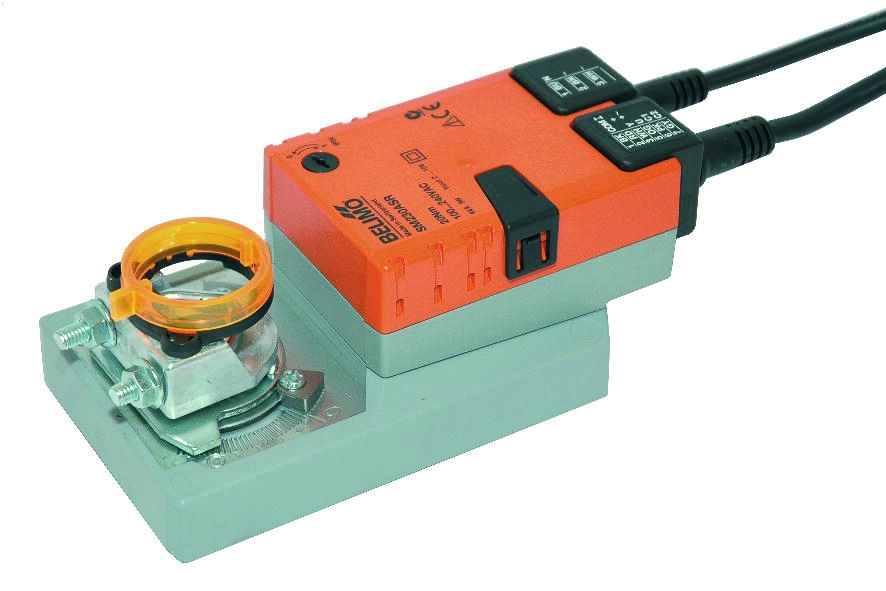

Find why a VAV box misses its airflow setpoint
Follow air, pressure tubes, damper travel and controller readings. Use a worked airflow balancing sheet before changing calibration.
Trace both the air path and the control path
A variable air volume (VAV) terminal box changes supply airflow to a zone. In a pressure-independent airflow sequence, a pickup and pressure sensor estimate the actual flow, and the local controller moves the box damper to meet the requested flow within the available duct pressure. A typical pickup has two tubes. The box manufacturer supplies its pickup relationship and units. The room sensor, box damper and main air handler perform different jobs. Start with the layout in C03 and the units in T45.

Photo by Belimo Automation AG. Original photo · CC BY-SA 3.0.


Photo by Neurotronix. Original photo · CC BY-SA 4.0.

In the contractor’s installation photos, find the duct, compact controller and the two pressure tubes. Those photos show extract terminals. The exercise below uses a supply terminal and a hood at the diffuser. Alpha Controls’ installation photos · TROX terminal unit photographs · TSI capture hood photographs.
Watch. Watch how the capture hood sits at a diffuser and where the technician reads the volume. Compare that location with the VAV terminal's own pickup upstream. TSI’s Alnor capture hood demonstration on YouTube.
Work the same check at two setpoints
Use the paper exercise first. A technician uses an approved procedure and a suitable airflow reference, such as a calibrated capture hood at compatible diffusers. Sum all diffusers supplied by the terminal where the procedure calls for it. Account for duct leakage, hood backpressure and outlet geometry as appropriate. System changes and work above ceilings belong to an authorised team.
Use a fictional terminal where
Q = K√Δp, withK = 25 (L/s)/√Pa. Predict flow at 16 Pa and 64 Pa. Write down which instrument and which units supplied each input.Check the room demand, occupied airflow setpoint, controller pressure reading and damper command. Compare with physical position or an independent feedback point. Then compare the expected airflow with a reference measurement in the same stable condition.
Repeat at a different setpoint. Write which box, outlets and conditions you compared. On a real job, retrieve the airflow limits and balancing sequence from the equipment or commissioning record. Restore overrides and report the actual state after the work.
Diagnose three different failures from the readings
These are sample snapshots during approved functional checks. Compare each set of observations at the same moment.
| Setpoint and box readings | Independent comparison | First check |
|---|---|---|
| 200 L/s target. 64 Pa. BMS shows 160 L/s. Damper responds. | Approved reference near 200 L/s. | Check whether the controller has K = 20 instead of 25, and verify pressure and flow units. A wrong factor can produce exactly this difference. |
| 200 L/s target. 25 Pa. Damper commanded 100% open. | Physical damper open; reference near 125 L/s. | Check supply static pressure, branch restrictions and airflow conditions. The box estimate is consistent with the reference. |
| 100 L/s target. Pressure value stays fixed as room demand changes. | Physical airflow changes when the damper moves. | Look for a stale point, pinched tubing or a blocked pickup. Compare the sensor and controller timestamps and measurements. |
Check the expected values
At 16 Pa, 25 × 4 gives 100 L/s. At 64 Pa, 25 × 8 gives 200 L/s. At 25 Pa, 25 × 5 gives 125 L/s. A factor of 20 gives 160 L/s at 64 Pa. Each answer assumes the sample equation and units.
Use the original equipment application and approved balancing procedure for actual settings. Johnson Controls airflow balancing procedure · VAV pickup and box selection.
Write the two measured and predicted points, the first failed boundary and the setting or condition the responsible technician must verify next.